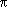

C/C++ Users Journal December, 2004
Flash is a vector graphics technology widely used on the Web. Developed by Macromedia and based on the ShockWave Flash (SWF) file format, you've likely encountered Flash in animated banner ads. However, Flash is more than just an animation and sound tool. ActionScript, its built-in JavaScript-like scripting language, also enables sophisticated interaction with users, and provides a straightforward means of passing data back and forth with servers. It uses UTF-8 internally so it is i18n-ready. Both standalone Flash players and web plug-ins are available for Windows, Macintosh, and Linux—and write once, run anywhere actually works, thanks in part to Macromedia's players [1].
In this article, I generate Flash files using C++ and the open-source Ming library, a C library for generating SWF files [2]. Although Ming is a C library, it provides a C++ wrapper file, along with extensions for Php, Python, Perl, Ruby, Java, and Tcl. Apart from a couple of initialization functions, I use the C++ classes. For illustrative purposes, I create a simple pie chart, and then extend it by adding both animation and mouseover effects.
The Flash coordinate system has (0,0) in the top-left, with x-coordinates increasing from left to right, and y-coordinates increasing from top to bottom. Drawing is done with the pen concept, so to draw a line, you set the pen at the start point, and then draw a line by specifying the end point. The next line you draw starts at the end of the previous one.
The first C++ class you need is SWFShape, which has a number of functions for drawing lines and filling shapes. The second class you use is SWFSprite, which can be thought of as the canvas (or "movieclip" in Flash terms). SWFSprite objects can embed other SWFSprite objects; an action (moving or rotating) applied to the parent affects all children. For example, a face may have child movieclips for the eyes, nose, and mouth. The eyes can blink, the nose twitch, and the mouth lip-sync, while the face bounces around the screen.
Listing 1 draws a solid red line. The first line gets an SWFShape object, while the second line defines the line you use. The SetLine function takes five parameters—the line's width, three RGB colors, and its opacity (0 is transparent, 0xFF is solid). Line 3 sets the first line to start at (0,0), draws diagonally to (100,50), left to (0,50), and back up to (0,0), giving you a right-angled triangle.
The Shape class in Listing 2 stores the appearance of the shapes. Higher level drawing functions are also added to this class. In ActionScript, you specify RGB as a single six-digit hex number and opacity on a scale of 0..100 percent; the class uses the same. You can see five member variables: three to describe the line's appearance and two to describe how to fill shapes. You could expand for dotted lines and allow gradients and pattern fills. I defined static functions to convert RGB and opacity, and a function called init_pen(), which the drawing functions can call.
There are two ways to make a pie chart—draw a circle, add some lines, and flood fill each slice, or draw individual pie slices one at a time. I take the latter approach because it lets me later treat each slice as independent objects—and also because neither Ming nor ActionScript have a flood fill function.
To draw a pie slice requires two straight lines and a curve connecting them. Both Ming and ActionScript have a function to draw curves: You specify an end point (by placing the pen at the start point) and a control point. Ming also has functions to draw a circle and an arc, but they're hard to use (they draw centered at 0,0, and you must move and scale the drawing). Consequently, I wrote the draw_arc_helper_ac() function (available at http://www.cuj.com/code/) that builds on drawCurveTo. (Because drawCurveTo cannot draw more than 1/8th of a circle at a time, 45 degree segments are required, with the control point in the middle of each segment. This is the only way to draw circles and arcs with ActionScript.)
Listing 2 presents a draw_pie_slice() function. The first parameter it takes is an SWFSprite parameter. You create an SWFShape object, draw on it, then add it to SWFSprite. The other parameters are: (sx,sy) at the center of the pie, sa and ea at the start/end angles (in radians) of the slice, and xr,yr, which describes the radius of the pie (if equal, the pie is a circle; if yr is less than xr, you get an ellipse).
Before starting to draw, call setLeftFill, passing it the return value of addSolidFill. This fills the shape you are about to draw. Solid, in this context, does not refer to opacity, but as an alternative to gradient or pattern fills.
For each slice in the pie chart, you want to describe the value, label, and appearance. The PieDataItem class (Listing 3) does this. Everything is public; there is no error-checking code. In a commercial-strength version, you might replace double with with a template parameter. Listing 3 also shows a simple functor to help you get value from the PieDataItem and add it to a running total.
Next, you need a class to store the data items, and a vector from the STL is ideal. Listing 4 presents the MingPieChart class. To add data to the vector, the code looks like this:
MingPieChart pie; pie.data.push_back(PieDataItem(10,"ten",0xff0000));
There's no messing around with dynamic memory: You construct the data items directly in the push_back() call. The first parameter is the value, the second is label, and the third the color to use. The other parameters are optional and produce black border lines and solid colors. I don't get any fancier than that in this article.
For each item in the data vector, you need to know how big a slice to show. The formula for determining this is:
(value/total)*2
To sum all the data items, use STL's accumulate, which takes each value in a sequence and adds it to a starting value. The sequence is defined by the first two parameters—you pass data.begin() and data.end() for those, and 0.0 as the starting value. You have a vector of objects—not values—so you use the four-parameter version, specifying the get_value functor defined in Listing 1.
Once you know the total, you loop through the data items one at a time, first calculating how many radians out of 2 it takes up, then calling draw_pie_slice() on its appearance data member. You then use the end angle as the start angle of the next slice.
Listing 5 implements MingPieChart::draw(). movieclip is the canvas you draw on, ox,oy is the center of the chart, and xr,yr describes the radius. The final parameter is rot, the initial rotation in radians. If it is 0, then the first data item starts at the right of the chart; if /2, then the first data item starts at the top, and so on.
The sin and cos functions (from the Standard C Library) used in the low-level functions are not limited to a 0 to 2 (360 degree) range. If you pass 3, they return the same as if was passed; if you pass 4, they return the same as 2, and so on. This is why in Listing 5, you simply start with whatever value of rot that is given and add 2 worth of arcs.
Listing 6 brings all this together. First, define the size and filename of the flash file (with an "swf" extension) you want to create, and then calculate a suitable radius. Next, initialize the data.
The next four lines are standard for all Ming applications. Although Flash 5 is sufficient for this demo, I specify Version 6 because most applications I write use the more advanced ActionScript features. (Most users have upgraded to Version 6 or 7 anyway.) You then create an SWFMovie object and set its size. SWFMovie is like SWFSprite in Listing 2, but since it is at the top level, it has special properties—dimensions, background colors, and frame rate.
Next, create an SWFSprite to draw on, call the draw() function, and then call nextFrame(). This step is very important—without it, the content isn't added. Then add the clip you've just drawn on to the overall movie and call nextFrame() on the movie. Finally, call save(), which produces a 243-byte SWF file. There is an optional second parameter for compression—use 9 to get maximum compression. It only reduces it to 214 bytes, but is definitely worthwhile on bigger SWF files. If it were a CGI script or part of a pipe, call output() instead of save() to write the bytes to stdout. A makefile for Linux is available at http://www.cuj.com/code/. Typing make run1 generates the output in Figure 1.
Flash animation is straightforward. Start by adding this line (somewhere after creating movie):
movie->setRate(12);
(While 12 frames/second is the default, it does not hurt to be explicit.) Set frames to 60 to rotate the pie chart in 60 stages, you can experiment to find the lowest number with acceptable smoothness. 60 frames divided by 12 frames/second means it will take 5 seconds to spin. To spin faster, either reduce the number of frames or increase the frame rate. Fewer frames is jerkier, higher frame rates put more load on the CPU.
Next, replace the call to pie.draw() with the loop in Listing 7, which increments rot from 0 to 2 in 60 steps, calling draw() each time. The SWF file loops automatically, and once it gets back to 2, it takes off again from 0.
Breaking the loop down, you see that you create the Sprite canvas, draw on it, and call nextFrame. Then you add this to the main movie, and call nextFrame on the movie. But the difference from the first version is that you collect a handle to the sprite just added. You can do all kinds of things with that handle: Move it around the screen, rotate it, or skew it. But the important thing here is that you remove it from the movie. Granted, you only just added it, but that's the way it works.
Compile this, run the SWF, and the pie chart spins. Admittedly poor data presentation, but the marketing department will be impressed anyway.
Why call remove()? The best answer is to compile and run pie2slow.cpp (available at http://www.cuj.com/code/). It starts spinning happily for the first half of the cycle, but then slows down and chugs by the end. Once it gets back to where it started, it takes off quickly again. Listing 8 is the loop that does this.
Originally, I thought the slow down was due to some other process running on my machine. Then it dawned on me that if you don't remove your drawing on frame 1, then on frame 2 it draws everything on frame 1, and then draws everything on frame 2. So in the slow version, by the time it gets to frame 59, it is drawing the pie chart 60 times. Of course, the point of this example was how to do multiframe animation. If all you wanted to do was spin an object, it is better to draw it once on frame 1, get the SWFDisplayItem handle, then use SWFDisplayItem::rotate() on the subsequent frames rather than redrawing it on each frame.
Recall that I included a label with the PieDataItem class (Listing 3). I now use this as a pop-up when moving the mouse over each pie slice. Using the mouse in this way—and the ease with which you can do it—is one reason Flash is so useful for data analysis. Doing this requires two changes (relative to the original nonspinning chart):
In the main() function, the only change is to replace the call to pie.draw() with a call to pie.draw_with_clips(). Listing 9 is that new function. You add one new parameter, prefix, which is what you use for the ActionScript names given to each slice. In a production version, you would have code to check that prefix is at least one-character long, check for buffer overflow, and the like.
In the main loop, you create a new SWFSprite each time, draw on this, then add this to the movieclip canvas, making sure to get the handle to the added object. You then use that handle's setName function to assign a unique name. If you run this code, you see a pie chart like before.
Although object oriented, ActionScript is not strongly typed. This can be frustrating, as the Flash player does not give error messages. If you mistype a function name, it does nothing. If you mistype a variable name, it uses undefined as the value. Unlike C (but like most scripting languages), strings in ActionScript can be surrounded by either double or single quotes. I use single quotes so they don't require escaping when used inside C's double quotes.
To add ActionScript to a movie, use this syntax:
movieclip->add(new SWFAction("..."));
The ActionScript is generally squeezed onto one long line, or built up in a buffer beforehand. For long ActionScripts, I recommend holding it in an external file that you load at runtime (this also saves recompiling the C++ code each time you modify the ActionScript).
First, before the pie-slice loop, you create a text box; see Listing 10. _root is the top-level movieclip (the SWFMovie object in Ming terms). The first parameter is the name to use (I call it mo_txt); the second parameter is the depth (1000 ensures it appears on top of everything else). The next two are coordinates that are set to 0,0, but will be changed with the mouseover. The last two parameters are width and height; using autoSize means we can just set them to zero.
Once created, you can refer to this using either _root.mo_txt or _root['mo_txt']. The next five lines specify autosize (the text box size fits to the text it contains), use a border and background (defaults to white), switch selectable off (stops the text being highlighted and copied to clipboard; set this just to stop the mouse cursor changing when over the text), and invisible initially. The latter is so our text box does not show until the mouse moves over a pie slice.
In the pie-slice loop, after assigning the ActionScript name, you add the mouseover actions. Do this by assigning a function to the onRollOver/onRollOut events. You use sprintf to insert the name and the label to show; Listing 11 is a completed draw_with_clips() function. Listing 12 shows the ActionScript more clearly, including variables for the first pie slice inserted. When the mouse enters a pie slice, set the text, move it to where the mouse is, and make it visible. When the mouse exits again, simply make it invisible (no point in moving it somewhere or removing the text). The semicolon after the function definition is required. Upon compiling and running this movie, a mouseover of the pie slices generates something like Figure 2.
There are many improvements that can be made to this demo. For instance, instead of showing the text where the mouse is, you can center it on a pie slice by calculating the mid-angle of the slice. You can also change the pie slice color during a mouseover; _root.mo_txt._alpha=50; produces an interesting effect, and in onRollOut, you restore it with _root.mo_txt._alpha=100;. Other changes might include making the slice 3D, adding a legend, and using gradients and patterns instead of plain colors. Mouse clicks can be used to drill down into the data. For additional ideas, see more of my Flash charts at http://dcook.org/work/charts/.
Thanks to Wolfgang Hamann for reviewing this article.
[1] Download the most recent Flash player at http://www.macromedia.com/ go/getflashplayer/.
[2] Ming can be found at http://ming.sourceforge.net/.